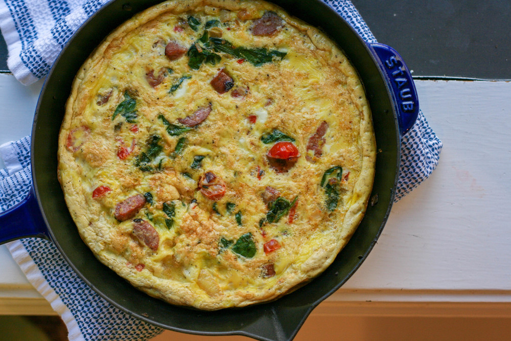

Inapoi
Reteta de omleta a la Bogdani
Instructiuni:
- Deschideti frigiderul.
- Faceti inventarul.
- Inchideti frigiderul.
- Lower your standards.
- Repeat until you're ready to make an omelette from scrap.
TIPS:Omleta se poate face din ORICE gasesti in frigider!(mai ales din oua)

Ultimele omlete gatite de catre maestrul bucatar:
- Omleta cu unt de arahide
- Omleta cu ciuperci(de padure) facute in sos de portocale
- Omleta cu bulion si branza
- Omleta cu alune
- Omleta cu sos de ficatei
- Omleta cu vin sau bere(ce mai ramane dupa ce degusta bucatarul)
TIPS:Nu va fie frica sa experimentati! ( I won't judge)